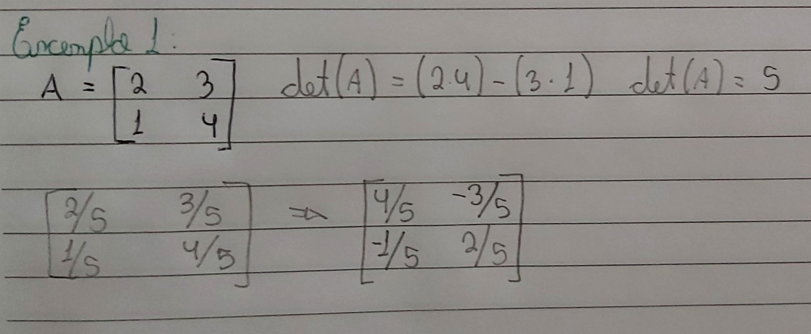
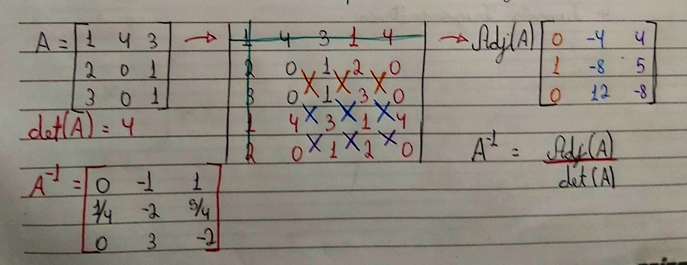

MATRIZES INVERSAS
Matriz inversa é como se fosse a operação inversa, como se fosse uma divisão, mas essa divisão ocorre com uma multiplicação com a matriz inversa. Essa matriz surge quando multiplicada por uma identidade de mesma ordem. Mas é importante lembrar que nem toda matriz tem sua investível, se o determinante for igual a zero, A MATRIZ NÃO TEM INVERSA.
Matriz 2x2
Para se obter a inversão da matriz quadrada de ordem 2 deve seguir os seguintes passos.
- Calcular o determinante da matriz A, det(A)=k
- Multiplicar os elementos da matriz por 1/k
- Mudar a posição dos elementos da diagonal principal
- Multiplicar a diagonal secundária por (-1), fazendo-o inverter o sinal.

Matriz 3x3
Para a inversão de uma matriz quadrada de ordem 3, temos os seguintes passos:
- Calcular o determinante da matriz A, det(A)=k
- Repetir no lado direito as duas primeiras colunas, e repetir em baixo as duas primeiras linhas.
- Anular a 1º linha e a 1º coluna
- Calcular os determinantes da matriz 2x2 dentro da matriz A, criando uma matriz adjunta. Essa matriz adjunta gerada, tem a primeira coluna com os determinantes da primeira linha.
- O último passo é dividir todos os elementos da matriz pelo determinante.
